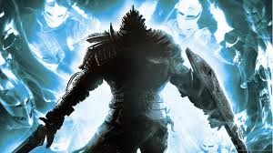

Thou who art Undead, art Chosen.
Shipped away to the Undead Asylum, the player character starts out as one doomed to await the end of the world. Through the actions of one who believed in a prophecy to guide the world back into light by rekindling the old flame, you find yourself freed. Thus, the Chosen Undead maketh pilgrimage to the land of Lords, Lordran. They rest at Firelink Shrine, and continue the steps to fulfill the prophecy, by gathering the souls of the Great Lords to gain access to the Kiln of the First Flame. There, they will take on Gwyn, Lord of Sunlight, who long ago sacrificed himself to rekindle the flame, much like your quest. But you need not follow in the footsteps of one who seeks to stifle the ushering of a new age. A choice is upon you. Kindle the flame, and grant the world an extended period of the Age of Fire? Or allow it to fade, and usher in an Age of Darkness. In truth, it matters little. The cycle always starts again. Thou who art Undead, art Chosen.
Go Back